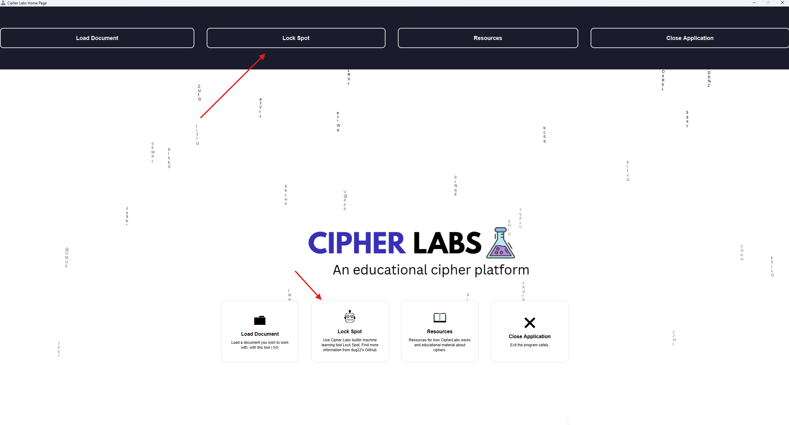
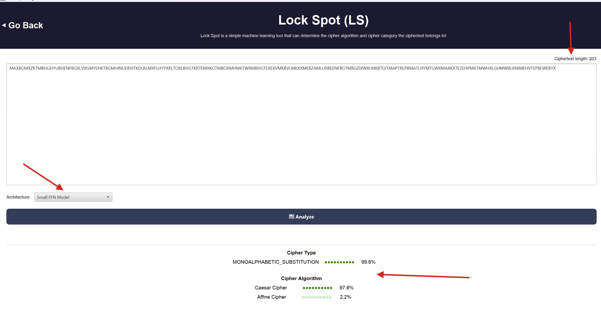

About Lock Spot
Lock Spot is a machine learning tool that allows users to input ciphertext and receive a conducted analysis of the cipher algorithm most likely used to encrypt it, along with the cipher category it most likely belongs to (such as monoalphabetic substitution, polyalphabetic substitution, transposition, and more). Lock Spot was developed as an interactive command-line tool, but its core components have been integrated with Cipher Labs.
Lock Spot's Machine Learning Process
Data Preparation
Starting out, Lock Spot was trained on 50,000 records from Allen AI's C4 English dataset, which is a cleaned version of Common Crawl's web crawl corpus. The models were trained only on texts longer than 90 characters. Before training, Lock Spot's data collection protocol involved gathering texts from the Allen AI C4 dataset, skipping short-length texts, and cleaning the data by removing special characters, converting all letters to uppercase, and retaining only alphanumeric characters. All texts were then passed through the appropriate encryption algorithms, producing new data such as the ciphertext result of the plaintext, a key (if the algorithm used one), and text analysis features. Features were very important, as this input allowed our models to distinguish which cipher algorithm a text was encrypted with and the cipher type it belonged to. The forty features Lock Spot trained off of were:
- Frequency probabilities of characters “A-Z” and “0-9” in the given ciphertext.
- Were double letters or double digits present in the given ciphertext?
- Was the letter "J" present (very important feature, because some classical ciphers either excluded or combined the letter “J” with the letter “I” like Playfair and Bacon) in the given ciphertext
- The index of coincidence (IoC)
These features and their corresponding target labels (the “cipher type” and “cipher algorithm”) were fed into these models for training (a technique known as supervised learning).
Models of Choice
The models of choice for this project were originally a feed-forward network and a random forest classifier. The random forest classifier model was excluded due to the large size of the model's parameter file. Due to those circumstances, a logistic regression model was trained on its behalf and was integrated into Cipher Labs.
Model Architectures and Classification Capabilities
There are two types of model architectures, which are small and large model architectures. From the ciphertext alone, small model architectures were trained to classify the following cipher algorithms:
- ADFGVX Cipher
- Affine Cipher
- AMSCO Cipher
- Atbash Cipher
- Autokey Cipher
- Baconian Cipher
- Beaufort Cipher
- Bifid Cipher
- Caesar Cipher
- Gronsfeld Cipher
- Playfair Cipher
- Polybius Cipher
- Porta Cipher
- Railfence Cipher
- Vigenère Cipher
Originally, small model architectures were trained on 50,000 unique records of ciphertext and their extracted features. Plans are under development to expand the dataset volume, allowing small model architectures to learn other patterns of ciphertext that are currently missing (the same principles apply to large architecture models).
Large model architectures are currently under development, with plans to train them on a baseline dataset of 160,000 or more unique ciphertext records to identify 29 classical cipher algorithms.
- ADFGVX Cipher
- Affine Cipher
- Alberti Cipher
- AMSCO Cipher
- Atbash Cipher
- Autokey Cipher
- Baconian Cipher
- Bazeries
- Beaufort Cipher
- Bifid Cipher
- Cadenus
- Caesar Cipher
- Columnar
- Grandpré Cipher
- Gronsfeld Cipher
- Hill Cipher
- Myszkowski Cipher
- Nihilist Substitution Cipher
- Nihilist Transposition Cipher
- Playfair Cipher
- Polybius Cipher
- Porta Cipher
- Railfence Cipher
- Route Cipher
- Running Key Cipher
- Trifid Cipher
- Trithemius Cipher
- Two Square Cipher
- Vigenère Cipher
Cipher types that Lock Spot's current model architectures can classify are:
- Transposition
- Fractionating
- Polyalphabetic Substitution
- Monoalphabetic Substitution
- Polygraphic Substitution
- Stenographic
Model Performance
The figure below resembles what small model architectures achieved in performance, from the baseline of 50,000 unique ciphertext records, and its features (dataset volume is bound to increase), these models were trained on:
| Model Name | Accuracy in % of Identifying the Given Cipher Type | Accuracy in % of Identifying the Given Cipher Algorithm | Average Accuracy in % |
|---|---|---|---|
| Lock_Spot_Small_FFN_Model | 99.18 | 87.57 | 93.375 |
| Lock_Spot_Small_Logistic_Regression_Model | 95.76 | 73.77 | 84.765 |
Accessing and Utilizing Lock Spot's Module On Cipher Labs
To access Lock Spot's module on Cipher Labs, simply click on the top or center navigation label called "Lock Spot"


The figure above resembles Lock Spot's user interface. The arrows that you see on display are of the following:
- Model Architecture Dropdown Box (located above the analyze button): Allows you to select a model of choice when analyzing inputted ciphertext
- Ciphertext Length (located on the top): Allows you to see how many characters in your cipher. Do note that Lock Spot requires the given ciphertext length to be 100 characters or more.
- Generated Report (located underneath the analyze button): are the model's predictions
Before analyzing any given ciphertext, make sure that your given ciphertext follows four format rules:
- Ciphertext can only be alphabetic or alphanumeric.
- Given ciphertexts must be 100 characters or more.
- All letters within the given ciphertext must be uppercase.
- No special characters are allowed.
If your ciphertext follows the format rules above, click analyze to get a report of our model's predictions.